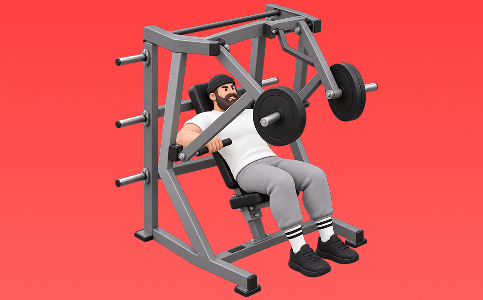

デクラインチェストプレス

デクラインチェストプレスとは、マシンを使ってベンチ角度を下げた状態で「押す」動作で胸下部（大胸筋下部）、肩前部（三角筋前部）、腕（上腕三頭筋）を鍛える種目です。軌道が安定して狙った部位に効かせやすいのが特徴で、ベンチに仰向けになり、胸に下ろして押し上げる動作を繰り返します。胸下部の厚みづくりや上半身の押す力の向上が期待できます。
- 対象部位
- 胸
- 器具
- マシン
- 記録形式
- 重量・回数
- 別名
- デクラインチェスト / デクラインマシンチェストプレス / decline chest press / decline machine press
YouTube動画
-
【大胸筋の輪郭を作る！】下部だけを狙う技術を公開！寺島遼がデクラインチェストプレスを徹底解説。
-
鈴木雅が解説！３分でトレーニングの質が変わる！大胸筋を鍛えるマシンの使い方の重要性！デクラインチェストプレスで実践
-
【プロが教える】しっかり「胸」に効かせるチェストプレスの正しいフォーム in hacomono 【新・バズーカ岡田チャンネル】 #バズーカ岡田
-
【胸トレ】マシントレーニングならこれをやれ！大胸筋を発達させるチェストプレス徹底解説
-
【チェストプレス】基本まちがってない？ボディビル世界王者 山岸秀匡が教える初心者から上級者まで必須の正しい使い方【ドラゴンの教科書】
-
【持田式】チェストプレスの素晴らしさを知って欲しい
-
【胸強化】MTS デクライン・チェストプレス使用方法
-
【チェストプレス】大胸筋に効く正しいフォーム〜マシンの使い方まで徹底解説
-
【目からの鱗の新常識】胸の必須種目！寺島流のチェストプレスを徹底解説。
-
筋トレ初心者が最初に覚えるべき胸トレのマシン使い方解説【エニタイムフィットネス】
-
PLATE-LOADED デクラインプレス（トレーニング動画）
-
筋トレで人気種目のマシンチェストプレスをトレーニング歴35年のジュラシック木澤が完全解説します
-
【筋トレ】ダンベルベンチプレスはここに要注意！大胸筋にしっかり効かせるためのポイント
-
【デクラインダンベルプレス】角度・滑る対策など大胸筋下部に効かせるコツを徹底解説
YouTubeショート
-
【かんたんマシンの使い方】チェストプレス編＃shorts
-
デクラインチェストプレス（胸のライン作り）
-
チェストプレスの正しいやり方を解説します！【佐野市の24時間ジム：AEGYM】 #Shorts #ジム通い #筋トレ #ジム初心者
-
マシンの正しい使い方教えます『チェストプレス編』
-
大胸筋を最大限に鍛える種目3選【筋トレ】
-
ベンチプレスの正しいやり方を紹介 #筋トレ #フィットネス
-
【筋トレ初心者必見 ! |ダンベルデクラインプレスのやり方】日本人初ミスター・オリンピアに出場した、山岸プロが解説！ #山岸秀匡 #筋トレ初心者 #ダンベルデクラインプレス 続きはコメ欄から!
-
【大胸筋】チェストプレスマシンのやり方について？！
-
持田選手にベンチプレスについてレクチャーしていてもらいました！次はどの種目の解説をやってほしいかコメントしてね！#筋トレ #volix #トレーニング #fitness #ベンチプレス
-
【チェストプレスマシン】肩を痛めないためのコツはこれ！
-
マシンを使ったショルダープレスのコツ
-
【痛いほど効かす】マシンチェストプレス3つのコツ
-
【大胸筋】腕立て伏せとベンチプレスで鍛え続けた結果 #筋トレ #宅トレ #細マッチョ
-
胸トレのやり方🔥〜ダンベルプレス基礎編〜 #筋トレ #筋肉 #筋肉社長 #胸トレ
-
胸が成長しないダンベルプレス #筋トレ
-
胸トレ1種目しかできないならどっち？ #山本義徳 #shorts
-
【筋トレ】ダンベルプレスのポイント #shorts
-
難しいディップス、このやり方でしっかり胸に効かせられます！#筋トレ#胸トレ#ディップス#ボディメイク#トレーニング
-
【1分で分かるマシンの使い方】チェストプレス編 #Shorts
-
【SGIR】胸トレ3種目だけなら何選ぶ？
-
【筋トレ】ペックフライのやり方＃筋トレ＃筋肉＃ペックフライ＃胸トレ#chesttraining g
-
【筋トレ解説】ケーブルクロスオーバー下部 #筋トレ #筋トレ解説 #胸トレ
-
自己ベスト80kgなるか、、、？ #Shorts #筋トレ女子 #ベンチプレス
-
チェストプレスの使い方
-
正しい腕立て伏せ3つのポイント #筋トレ
-
日本一の大胸筋が教える「チェストプレス」リアル刃牙kyo x Tsukaken
-
細マッチョの胸トレはベンチプレスだけで十分🏋️ #筋トレ #宅トレ #細マッチョ
-
デクラインチェストプレス
-
正しいサイドレイズ4つのポイント #筋トレ
-
ペックフライのフォームについてです✨
-
【山本義徳】ベンチプレスより腕立て伏せが効果的な理由はこれです【切り抜き】
-
【大胸筋】ダンベルプレス良くある初心者エラー
-
インクラインプレスで大胸筋上部を鍛える2つのポイント #フィットネス #筋トレ
-
1セットで大胸筋に効くベンチプレスのやり方。#shorts
-
【ベンチプレス100kgあげる河野玄斗】 #shorts #河野玄斗 #study #筋トレ
動作方法
- 安定した姿勢を作り、肩と体幹を固定する
- 狙う部位を意識して、反動を使わずに押す
- 可動域を保ちながら、ゆっくり元に戻す
動作ポイント
- 肩をすくめない
- 手首を寝かせすぎない
- 反動を使いすぎない
ワンポイントアドバイス
- 最初は可動域を優先してフォームを固める
- 肩に違和感がある日は重量を落として調整する
目的別回数設定
目的や体力に応じた一般的な目安です。無理のない範囲で調整してください。
- 筋力アップ
- 1〜5回
- 筋肥大
- 6〜12回
- 持久力アップ
- 13〜20回
YouTube動画について
動画はYouTubeの公開情報をもとに表示しています。内容は投稿者によるもので、Biggrによる監修ではありません。
アプリを入手
筋トレやトレーニングの記録はBiggrにお任せください。今すぐ無料で使い始められます。